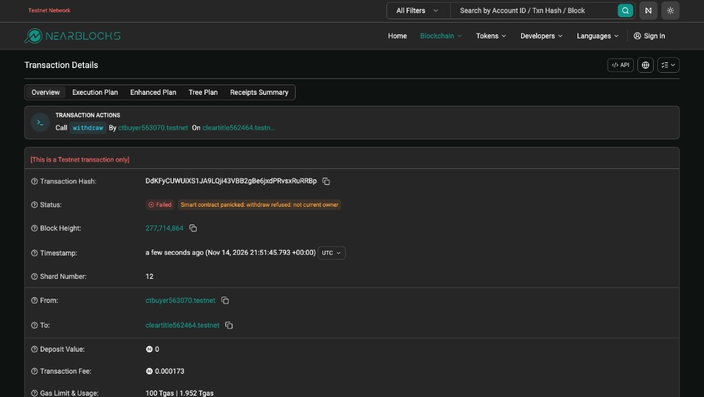

Live explorer proof
Old-owner withdraw · EXPECTED FAIL

Drop your Nearblocks screenshot here as
apps/web/public/demo-diagrams/explorer-proof.png
then re-record. Until then this page still shows the 2s security gate + link.